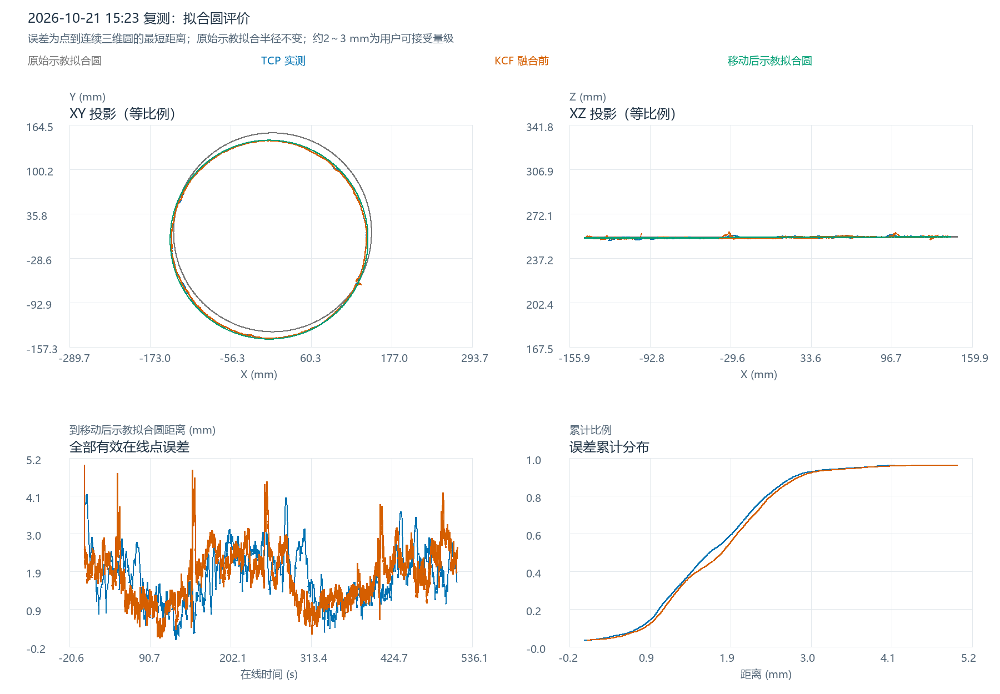

在线纠偏复测：综合新示教圆参考下的轨迹误差分析
本版唯一主参考：四组历史示教分别拟合后等权综合，半径固定为 142.035340 mm；再把圆心、法线对齐本轮融合前KCF估计的位置。综合尺寸未使用本轮TCP或KCF测量；KCF只参与位置/倾角对齐，TCP只参与评价。所有统计均为点到连续三维圆周的解析最短距离。
1. 数据范围与四条轨迹
沿用同一轮15:23复测，未切换至后来采集的其它会话。TCP保留在线运行且CORFLAG=1、DETFLAG=1、S_START=1、S_HOLD=0、ALARM=0的5,848个有效点；KCF保留online_running且result_valid=1的7,522个融合前点。两者均使用已验证的坐标转换结果，未对测量轨迹平滑、拟合或剔除峰值。融合后的最终视觉点仅列作补充对照。
四条主曲线依次为：灰色虚线——综合新原始示教拟合圆；蓝色——TCP实际轨迹；橙色——KCF融合前检测点轨迹；绿色——移动后的综合新示教拟合圆。统一使用变位机末节材料坐标系；逐点消除各自S1/S2旋转，并将视觉父级TCP的231 mm原点偏置还原到与示教相同的坐标原点。
三维轨迹与各轴波动：交互观察
先用三维视角观察整圈，再切换XY、XZ、YZ逐方向查看。Z向显示放大只改变视觉比例，1×可恢复XYZ等比例；原始TCP、KCF及真实坐标读数不变。
相对参考圆的各轴偏差随时间变化
下图分别展示每个测量点相对参考圆最近点的ΔX、ΔY、ΔZ。它将整圈运行造成的大尺度坐标变化与几何偏差区分开，便于识别局部波动；它不是TCP与KCF按时间配对后的差值。

2. 新原始示教如何建立
| 历史原始示教 | W点数 | 配套T点数 | 单独拟合半径/mm | 综合权重 |
|---|---|---|---|---|
| 20230608CHUFENGKOU_W.txt | 1687 | 2 | 140.6477 | 25% |
| 20250606CHUFENGKOU_W.txt | 1663 | 5 | 141.6920 | 25% |
| 20260308CHUFENGKOU_W.txt | 1355 | 2 | 142.0846 | 25% |
| 20260404CHUFENGKOU1_W.txt | 1368 | 5 | 143.7170 | 25% |
只纳入有正面工件映射依据的四种W几何，按XYZ内容去重，不按备份数量增加权重。每组W先估计圆心，按2°周向分箱取XYZ中位代表点，再拟合最小二乘平面和平面内的圆，并迭代降低局部径向偏离点对拟合的影响。配套T用于来源核对与模板保留，不作为另一组完整圆观测重复计权。
各组历史圆先按圆心/法线刚体归一，不缩放。新圆半径取四组半径的算术平均，每组25%；新原始圆心、法线沿用当前项目原始示教的参考摆放。再将当前W/T的XYZ投影到该新圆，形成另存的分析参考文件。具体顺序是“分别拟合历史圆 → 综合圆参数 → 生成新W/T”，并非把四组不同摆放位置的XYZ直接混在一起拟合。
20230608CHUFENGKOU原始W · 20250606CHUFENGKOU原始W · 20260308CHUFENGKOU原始W · 20260404CHUFENGKOU1原始W
来源、配对与去重依据：完整检索清单 · 纳入/排除清单 · 工件映射证据。反面工件、早期不完整圆弧及对应关系不明确的其它文件未混入主综合。四组半径范围140.648～143.717 mm，代表不同历史记录的尺寸差异；不宣称它们来自同一件实物或完全相同的标定状态。
3. 圆的移动方式与误差定义
综合圆半径保持142.035340 mm，使用保持尺度不变的刚体变换，将其圆心和法线对齐本轮原始KCF拟合圆。移动后圆心为(-0.508964, -1.674451, 253.478367) mm；单位法线为(-0.003378427, 0.000136381, 0.999994284)。没有改用KCF自身半径，也没有用TCP寻优参考位置。圆周几何不依赖绕圆法线的相位角。
c：移动后的圆心；n：圆平面单位法线；R：综合半径 h = (p-c)·n ρ = ||(p-c)-h n|| e = sqrt((ρ-R)² + h²) 平均误差 = mean(e)；最大误差 = max(e)；RMSE = sqrt(mean(e²))
该距离同时包含径向和离面偏差，评价对象是空间圆周；绘图的离散采样线段不参与统计。不按时间或行号强行配对TCP与KCF，均值按各自记录样本加权，不评价沿缝时序滞后和工具姿态角。圆参数及变换：移动前 · 移动后 · 刚体矩阵。
4. 主误差结果与2～3 mm范围
| 轨迹 | 有效点数 | 平均误差/mm | 最大误差/mm | RMSE/mm | P95/mm | ≤2 mm | ≤3 mm |
|---|---|---|---|---|---|---|---|
| TCP实际轨迹 | 5848 | 0.7838 | 2.5685 | 0.8950 | 1.5985 | 98.48% | 100.00% |
| KCF融合前检测轨迹 | 7522 | 0.7677 | 6.4706 | 0.9006 | 1.5064 | 97.67% | 99.67% |
| 融合后视觉（补充） | 7522 | 0.7665 | 6.3021 | 0.8959 | 1.5141 | 97.70% | 99.69% |
TCP有98.48%、KCF有97.67%的有效点在2 mm内；两条轨迹的P95分别为1.599、1.506 mm。这里按用户给出的约2～3 mm可接受量级进行描述，不将3 mm擅自升级为严格的逐点工艺限值。
逐点结果：TCP距离及分量 · KCF距离及分量 · 融合后视觉补充结果。
5. 局部偏离与误差分量
| 轨迹 | 径向有符号均值/mm | 径向RMSE/mm | 离面有符号均值/mm | 离面RMSE/mm |
|---|---|---|---|---|
| TCP实际轨迹 | 0.0319 | 0.7465 | 0.0167 | 0.4938 |
| KCF融合前检测轨迹 | -0.0480 | 0.7694 | 0.0057 | 0.4681 |
| 融合后视觉（补充） | -0.0671 | 0.7683 | 0.0171 | 0.4609 |
径向和离面均值为有符号量，可能相互抵消；综合评价仍使用前表的非负三维距离及RMSE。当前参考圆心/法线由KCF对齐，整体位置和倾角偏差可能被吸收，不能把这些分量解释成独立标定误差。
KCF共25点超过3 mm，占0.332%，分成6个记录连续事件。事件按相邻原始记录均超3 mm归组；相邻时间间隔超过200 ms再拆分，表中“首末跨度”只是已有记录时间跨度，不推断采样空隙内的真实状态。下表列误差最大的最多10个事件，完整记录见事件表。
| 开始 | 结束 | 点数 | 首末跨度/ms | 最大/mm | 峰值径向/mm | 峰值离面/mm |
|---|---|---|---|---|---|---|
| 15:26:40.919 | 15:26:41.579 | 10 | 660 | 6.4706 | 6.3990 | 0.9604 |
| 15:24:57.596 | 15:24:58.026 | 7 | 430 | 4.6701 | 0.6937 | 4.6183 |
| 15:24:11.958 | 15:24:11.958 | 1 | 0 | 3.9667 | -1.7982 | 3.5357 |
| 15:28:21.139 | 15:28:21.370 | 5 | 231 | 3.4980 | -1.2913 | 3.2509 |
| 15:26:44.318 | 15:26:44.318 | 1 | 0 | 3.1773 | -2.4416 | -2.0331 |
| 15:28:21.733 | 15:28:21.733 | 1 | 0 | 3.0744 | -1.3828 | 2.7458 |
最大KCF偏离发生在 15:26:41.282，三维距离 6.471 mm，当时径向分量 6.399 mm、离面分量 0.960 mm。这说明存在局部几何偏离，但仅凭这些轨迹不能确定是图像检测跳点、实际焊缝局部形状、机器人状态时效还是其它原因。当前报告不将它直接归为控制故障。TCP最大偏离2.569 mm，发生在15:24:15.253。
另按圆平面角度每30°分段统计，见空间分段表。角度零点为圆平面内的投影X方向，用于定位空间区段，不代表机器人程序起始相位。
6. 参考敏感性与上一版对照
每次剔除四组历史示教中的一组，用其余三组等权重建圆，得到如下参考敏感性范围。主报告始终使用预先确定的四组等权结果，不从这些候选中选择误差最小者。
| 轨迹 | 平均误差范围/mm | RMSE范围/mm | 最大误差范围/mm |
|---|---|---|---|
| TCP实际轨迹 | 0.783–0.936 | 0.896–1.073 | 2.554–2.985 |
| KCF融合前检测轨迹 | 0.767–0.874 | 0.900–1.035 | 6.014–7.025 |
查看完整敏感性表。这些变化说明误差数值确实受历史参考尺寸选择影响，不能脱离参考定义单独比较数值大小。
| 轨迹 | 参考定义 | 平均/mm | 最大/mm | RMSE/mm |
|---|---|---|---|---|
| TCP实际轨迹 | 上一版单组示教圆 | 1.7262 | 4.1316 | 1.8767 |
| TCP实际轨迹 | 本版四组综合示教圆 | 0.7838 | 2.5685 | 0.8950 |
| KCF融合前检测轨迹 | 上一版单组示教圆 | 1.8018 | 4.9609 | 1.9495 |
| KCF融合前检测轨迹 | 本版四组综合示教圆 | 0.7677 | 6.4706 | 0.9006 |
本版较上一版数值减小，是参考尺寸改变后的重新评价。TCP、KCF测量没有变化，不能据此声称控制算法或本轮执行过程又提升了一次。仿真模型由测绘获得、真实工件制造误差较大的背景下，历史半径差保留为参考来源差异，不再作为需要优先排查的纠偏异常。
7. 结论与使用边界
以当前固定的新综合示教圆为参考，本轮整体几何贴合达到用户认可的误差量级：TCP全部有效点在3 mm内，KCF有99.67%有效点在3 mm内；主要剩余现象是KCF少量局部峰值。当前结果可用于比较整圈几何贴合、识别局部偏离并支撑本次复测总结。
新圆的尺寸独立于本轮测量，但位置/倾角仍由KCF估计，因此它是历史综合比较参考，不能据此宣称当前实物已取得独立绝对焊缝真值。新W/T仅用于分析，姿态、外轴和时间列沿用旧模板，未重新验证为可执行机器人示教程序；生产配置未切换。
8. 验证与可追溯附件
已核对历史W/T拷贝哈希、四组几何去重、权重和为1、刚体变换、生成点在综合圆上，以及逐点解析距离的独立交叉计算。主统计表与逐点CSV回读一致；TCP/KCF与此前同轮派生坐标一致。静态图已检查，交互图脚本及控制逻辑检查通过，真实浏览器交互未验收。